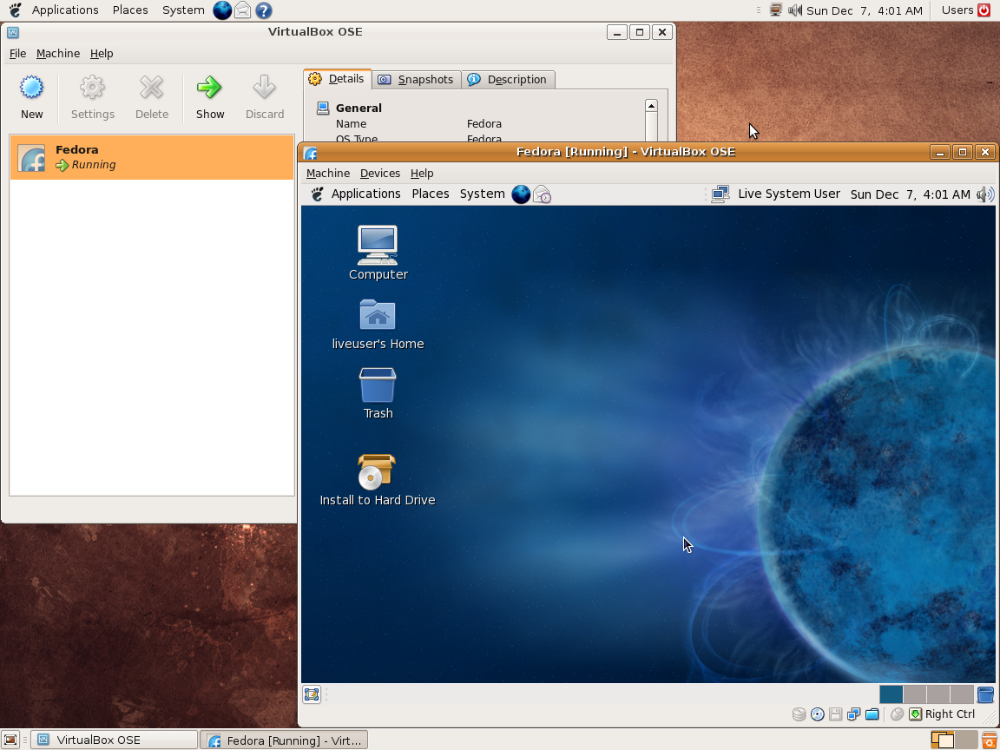

En informática una máquina virtual es un software que simula a una computadora y puede ejecutar programas como si fuese una computadora real. Este software en un principio fue definido como "un duplicado eficiente y aislado de una máquina física". La acepción del término actualmente incluye a máquinas virtuales que no tienen ninguna equivalencia directa con ningún hardware real.
Una característica esencial de las máquinas virtuales es que los procesos que ejecutan están limitados por los recursos y abstracciones proporcionados por ellas. Estos procesos no pueden escaparse de esta "computadora virtual".
Uno de los usos domésticos más extendidos de las máquinas virtuales es ejecutar sistemas operativos para "probarlos". De esta forma podemos ejecutar un sistema operativo que queramos probar (GNU/Linux, por ejemplo) desde nuestro sistema operativo habitual (Mac OS X por ejemplo) sin necesidad de instalarlo directamente en nuestra computadora y sin miedo a que se desconfigure el sistema operativo primario.
Funcionamiento de la máquina virtual de Java, una de las máquinas virtuales de proceso más populares.
Funcionamiento de VMWare, una de las máquinas virtuales de sistema más populares. Las máquinas virtuales se pueden clasificar en dos grandes categorías según su funcionalidad y su grado de equivalencia a una verdadera máquina.